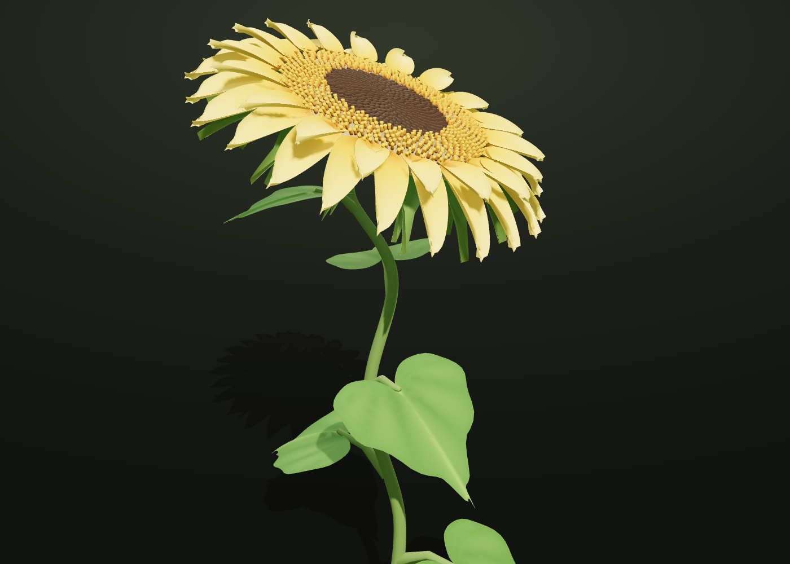
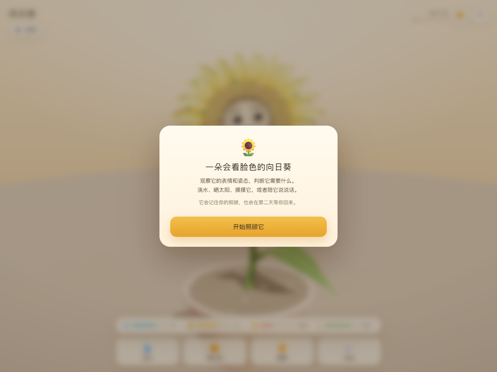

向日葵三维模型
程序化生成的实体向日葵：花盘小花按黄金角排布，花瓣两轮渐变色，叶片带锯齿与叶脉。可旋转、缩放、实时调整形态参数，一键导出 STL 去打印。
sunflower.html

情绪向日葵
一盆会看脸色的向日葵。浇水、晒太阳、摸摸、说说话，它用开心、生气、难过、困倦、害羞、好奇回应你；会记住你的照顾，也会在第二天等你回来。
emotion-sunflower.html
一株能切片打印的立体向日葵，一盆会看脸色的情绪向日葵。
挑一个，开始。

程序化生成的实体向日葵：花盘小花按黄金角排布，花瓣两轮渐变色，叶片带锯齿与叶脉。可旋转、缩放、实时调整形态参数，一键导出 STL 去打印。
sunflower.html

一盆会看脸色的向日葵。浇水、晒太阳、摸摸、说说话，它用开心、生气、难过、困倦、害羞、好奇回应你；会记住你的照顾，也会在第二天等你回来。
emotion-sunflower.html
双击这份 index.html，
或直接把整个文件夹拖进浏览器。两个作品都在同一个目录里，点卡片就能进。
?debug=1 可调试表情